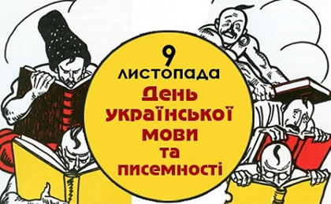

День української писемності та мови
День української писемності та мови – державне свято, яке щороку відзначається в Україні 9 листопада. Встановлене воно було 9 листопада 1997 року Указом Президента № 1241/97 «Про День української писемності та мови» на підтримку «ініціативи громадських організацій та з урахуванням важливої ролі української мови в консолідації українського суспільства».
За православним календарем — це день вшанування пам’яті преподобного Нестора-літописця — письменника-агіографа, основоположника давньоруської історіографії, першого історика Київської Русі, мислителя, вченого, ченця Києво-Печерського монастиря. Дослідники вважають, що саме з преподобного Нестора-літописця і починається писемна українська мова.
Чернецтво Нестор прийняв у 17-річному віці, пізніше висвячений в сан диякона. Він був книжником з широким історичним світоглядом і великим літературним хистом. Автор двох відомих творів – «Житіє Бориса і Гліба» та «Житіє Феодосія Печерського», складених у кінці ХІ ст. або на початку ХІІ ст.
Всесвітню славу Нестору принесла справа усього його життя – участь у літописанні Київської Русі. Він переробив зведення Никона та Іоанна, опрацював низку нових усних і письмових джерел, довів розповідь до 1113 року, надав їй літературної форми. Так на початку ХІІ ст. виникла перша редакція «Повісті минулих літ».
Колись цього дня віддавали до школи дітей. Батьки зі школи йшли до церкви та ставили свічку перед образом преподобного, вірячи, що він допоможе дитині вивчитися. І, що головне, вчитися все життя багато, старанно і завжди. Адже «користь від цього є велика», бо «Хто вчиться змолоду – не зазнає на старість голоду».
Традиційно, в День української писемності та мови покладають квіти до пам’ятника Несторові-літописцю, відзначають найкращих популяризаторів українського слова, заохочують видавництва, які випускають літературу українською мовою, проводять регіональні тематичні конкурси тощо.
